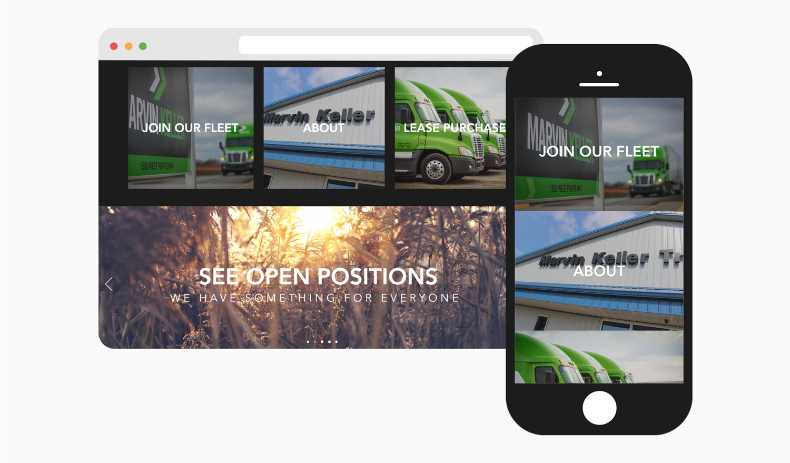
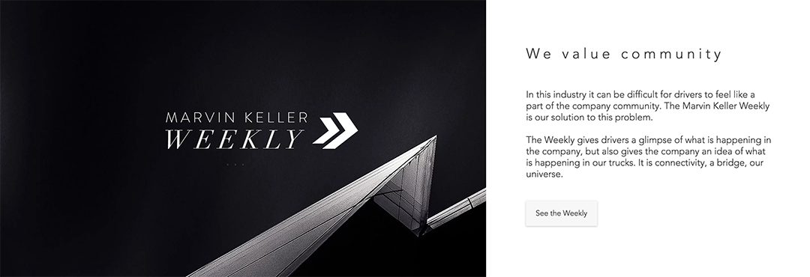

Objective
To develop, redesign, and launch a more user friendly website 2.0 for Marvin Keller, a transportation company. To begin a larger rebranding campaign to compete with fortune 500 carriers.
View WebsiteThe Problem
Marvin Keller's old website was outdated with poor user experience. The company wanted a new website with a modern UX to appeal to tech savvy users and provide a better experience overall.
Research & Analysis
I started by observing the websites of competitors including J.B. Hunt, Pam Transport, and Roehl. I took note of each competitor’s strengths and weaknesses to help establish Marvin Keller’s potential market strengths.
Synthesis
My findings were summarized by the following:
- J.B. Hunt - Had great design and feel. Information was easy to digest. Great website in every way, but failed to present a personal and unique spark.
- Pam Transport - Attempted to present site like larger carriers, but greatly lacked in overall design and user experience. Was a good example of what to avoid.
- Roehl - Placed an exceptionally heavy emphasis on driver opportunities, but lacked in important design and user experience details.
Design Direction
Based on these findings, I found that the most effective website would:
- present a modern experience
- target driver opportunities
- highlight strong family and community values to ensure a personal spark
Solutions
Modern Experience
The site is presented with a modern layout to attract the eye and help rebrand the company as fast-paced and competitive. The responsive mobile design appeals to the younger, tech-savvy driving force who browse opportunities on their phones.

Driver Opportunities
The homepage has a banner section that toggles through all the different opportunities for drivers. This includes the training program for new drivers, job offers for experienced drivers, the owner operator program for small business owners, and the lease purchase program for aspiring business owners.
Family & Community
This is an online blog platform, where anyone in the company can submit content. It is meant to promote community, culture and brand reinforcement. It also empowers drivers to speak up and share ideas.